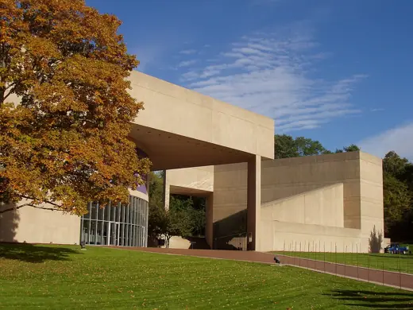

I. M. Pei buildings 27
Sort
 Des Moines Art Center1948 · Des Moines
Des Moines Art Center1948 · Des Moines Luce Memorial Chapel1963 · Taichung
Luce Memorial Chapel1963 · Taichung Society Hill Towers1964 · Philadelphia
Society Hill Towers1964 · Philadelphia Mesa Laboratory (NCAR)1967 · Boulder
Mesa Laboratory (NCAR)1967 · Boulder Cleo Rogers Memorial Library1969 · Columbus
Cleo Rogers Memorial Library1969 · Columbus Herbert F. Johnson Museum of Art1973 · Ithaca
Herbert F. Johnson Museum of Art1973 · Ithaca Dallas City Hall1978 · Dallas
Dallas City Hall1978 · Dallas John F. Kennedy Presidential Library and Museum1979 · Boston
John F. Kennedy Presidential Library and Museum1979 · Boston Wiesner Building (MIT Media Lab)1985 · Cambridge
Wiesner Building (MIT Media Lab)1985 · Cambridge Louvre Pyramid1989 · Paris
Louvre Pyramid1989 · Paris Bank of China Tower1990 · Hong Kong
Bank of China Tower1990 · Hong Kong Rock and Roll Hall of Fame1995 · Cleveland
Rock and Roll Hall of Fame1995 · Cleveland Miho Museum1997 · Koka
Miho Museum1997 · Koka German Historical Museum, Pei Wing2003 · Berlin
German Historical Museum, Pei Wing2003 · Berlin Suzhou Museum2006 · Suzhou
Suzhou Museum2006 · Suzhou Place Ville Marie1962 · Montreal
Place Ville Marie1962 · Montreal Green Building (MIT Building 54)1964 · Cambridge
Green Building (MIT Building 54)1964 · Cambridge Everson Museum of Art1968 · Syracuse
Everson Museum of Art1968 · Syracuse
Paul Mellon Arts Center1972 · Wallingford OCBC Centre1976 · Singapore
OCBC Centre1976 · Singapore National Gallery of Art, East Building1978 · Washington
National Gallery of Art, East Building1978 · Washington Fragrant Hill Hotel1982 · Beijing
Fragrant Hill Hotel1982 · Beijing Jacob K. Javits Convention Center1986 · New York
Jacob K. Javits Convention Center1986 · New York Morton H. Meyerson Symphony Center1989 · Dallas
Morton H. Meyerson Symphony Center1989 · Dallas The Gateway1990 · Singapore
The Gateway1990 · Singapore Mudam2006 · Luxembourg
Mudam2006 · Luxembourg Museum of Islamic Art2008 · Doha
Museum of Islamic Art2008 · Doha